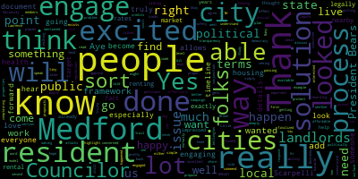
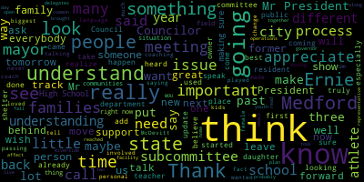
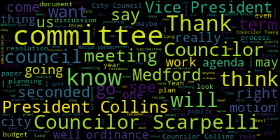

[SPEAKER_03]: Good evening, everyone. Welcome to the first meeting of the Medford City Council of 2024. Madam Clerk, please call the roll.
[SPEAKER_09]: Good evening. Councilor Baker. Present. Councilor Callahan. Present. Councilor Collins. Present. Councilor Lazzaro. Present. Councilor Leming. Present. Councilor Scapelli. Present. Councilor Tseng. Present. Total of seven. Nobody's absent.
[SPEAKER_03]: Excellent. Thank you. Please stand for the Pledge of Allegiance. Okay, this is the seven minutes a year when I have the honor of presiding over a city council meeting. Let's set a record and make it a lot less than seven minutes, please. Item number one on the agenda, 24-001, election of a city council president for calendar year 2024. Councilor Collins.
[Collins]: I nominate Councilor Bears.
[SPEAKER_03]: Councilor Collins has nominated Councilor Bears. Are there any other nominations? Is there a motion to close nominations? All in favor of closing nominations? Aye. Aye. Aye. Aye.
[SPEAKER_03]: Aye. Aye. Aye. Aye. Aye. Aye. Aye. Aye. Aye. Aye. Aye. Aye. Aye. Aye. Aye. Aye. Aye. Aye. Aye. Aye. Aye. Aye. Aye. Aye. Aye. Aye. Aye. Aye. Aye. Aye. Aye. Aye. Aye. Aye. Aye. Aye. Aye. Aye. Aye. Aye. Aye. Aye. Aye. Aye. Aye. Aye. Aye. Aye. Aye. Aye. Aye. Aye. Aye. Aye. Aye. Aye. Aye. Aye. Aye. Aye. Aye. Aye. Aye. Aye. Aye. Aye. Aye. Aye. Aye. Aye. Aye. Aye.
[SPEAKER_09]: Aye. Aye. Aye. Aye. Aye. Aye. Aye. Aye. Aye.
[SPEAKER_03]: Aye. Aye. Aye. Aye.
[SPEAKER_09]: Aye. Aye. Aye. Aye. Aye. Aye. Aye. Aye. Aye. Aye. Aye. Aye. Aye. Aye Councilor Collins. Zachary. Councilor Lazzaro. Zachary. Councilor Levee.
[Leming]: Zachary.
[SPEAKER_09]: Councilor Scapelli.
[Scarpelli]: Isaac B. Zachary.
[SPEAKER_13]: Councilor Tseng. Thank you, President. Isaac B. Zachary.
[SPEAKER_03]: And on a vote of six in favor, zero opposed, and one voting present, Councilor Isaac B. Zach Bares has been elected Council President for 2024.
[Clerk]: I'm going to administer the oath to the president-elect.
[SPEAKER_03]: You're going to raise your right hand and repeat after me.
[Bears]: I, Isaac B. Zach Bares, do solemnly affirm that I will faithfully and impartially discharge and perform all the duties incumbent upon me as President of the Medford City Council, according to the best of my ability. and understanding agreeable to the rules and regulations of the Constitution, the laws of this Commonwealth, and the ordinances of the City of Medford. Congratulations. Thank you. Thank you to my colleagues. Councilor Scarpelli, I am watching HBO's Rome right now. I do hope that the spirit of congeniality can continue, because I think it is good for all of us to be able to disagree agreeably and enjoy each other's company, even when we're not on the same side of issues. Thank you, Mr. Clerk. It's an honor to serve the people of Medford, and I thank them for placing their trust in me for a third term on the council. And I'm very thankful to my colleagues for your support in making me president-elect last month and electing me as council president tonight for the year 2024. All of you and residents may have seen that our agenda looks a little bit different tonight. A bit more modern, I dare say. And modernization is going to be a theme of the City Council this term, as we adopt some new technologies and new approaches to accomplish even more than we already have during my first two terms on the Council. I want to thank the entire team in the City Clerk's office, including City Clerk Adam Hurtubise, Assistant City Clerk Sylvia DiPlacido, Principal Clerk Janice DePace for their hard work supporting the Council, and especially Head Clerk Annie Kelly, who worked diligently alongside Clerk Hurtubise and me to get CivicClerk software online and off the ground in time to put together the agenda for this meeting. I also want to thank Medford Community Media Director Kevin Harrington and his team for installing these new monitors, which will help improve hybrid meeting accessibility, and for the work that we're going to do over the next few months to upgrade the audio system in the chambers, bring council meetings to YouTube live streaming, and hopefully even more. There are three principles that I intend to follow as I guide this council. Collaboration, planning, and trust. I know that if we ground our work in those principles, we'll be able to accomplish big things and deliver the results that residents want to see from their local government. Later tonight, I'll present two items that will help organize us towards those principles, a new committee structure, and a governing agenda framework for our 2024-2025 term. I know these will help the council collaborate better, plan better, and build trust across city government and with residents. Nothing can get done in city government without collaboration. I'm incredibly proud of the work this council did last term to work together in lockstep to advance shared goals and to pass several major ordinances, including the zoning recodification that will serve as the foundation for our zoning reform project this term. But collaboration within the council is not enough. We've made some progress on the budget ordinance and setting up the financial task force agreed to in the budget agreement that President Morell and I reached with the mayor last June. And I look forward to working with Vice President-elect Collins to establish strong collaboration with the mayor and her administration. This council has and will continue to reach out in good faith on every initiative and invite the collaborative approach we know will be needed to succeed and deliver results for Medford. Collaboration is a first step, but in order to get anything done, we need a plan. I've been focused on better planning since my first day in office. I was glad to assist in the development of our city's first comprehensive plan, as well as supporting the implementation of the housing production plan, climate plan, and more. Last May, I proposed the Medford Better Future Budget Plan to put forward immediate targeted changes to our city charter and our city ordinances to improve our budget process and get on the road to planning to fund the solutions to the big challenges our community faces. I'm glad that some of that plan has been incorporated into the budget ordinance discussions that we've had and initial meetings to set up the financial task force. The governing agenda framework and committee structure that I will present later is another element of planning that will help improve the council's work product process and make all of our efforts more transparent to residents and the public. Finally, getting big things done comes down to trust. Trust among elected officials, trust among key public and private stakeholders, and the trust of residents and the public in what their city government is doing. We have major projects ahead, an updated budget process, passing a near $200 million general fund budget this year and next year, recommendations of the financial task force around potential Proposition 2.5 debt exclusions or overrides, comprehensive citywide zoning reform that implements several of our major plans, and the drafting of a new city charter to propose to the mayor and the state legislature based on the work of the Charter Study Committee. To accomplish those huge tasks, we need the trust of the public. I commit to lead this council in the spirit of openness and transparency, to provide a clear plan for our work to the public, and to tell the public the truth to the fullest extent possible, even when the truth is hard to hear. Thank you again for your trust in electing me as council president, and I'll work to continue earning the trust of all of you and the public this term. Thank you. And I'll turn it back over to the clerk. and I will sign a document first.
[a6yjvy9bets_SPEAKER_05]: It's all yours. Thank you.
[SPEAKER_03]: I said I was going to preside for seven minutes. I've already presided for 10 minutes. So I will move to item 24-002, election of a city council vice president for 2024.
[Bears]: Yes, sir. I would nominate Councilor Collins for vice president.
[SPEAKER_03]: President Bears has nominated Councilor Collins for vice president. Is there a second? Councilor Tseng has seconded. My bad.
[Bears]: I rescind my nomination. I rescind, I withdraw my nomination and I leave the floor to my fellow councilor.
[SPEAKER_13]: I did not mean, I meant that in jest. I'm not gonna preside over a constitutional crisis. I fully meant that in jest. I nominate Kit Collins for VP.
[Callahan]: I second it.
[SPEAKER_03]: All right. Councilor Tseng has nominated Councilor Collins. There is a second from Councilor Callahan. Are there any further nominations? Is there a motion to close nominations? Councilor Tseng has moved to close nominations. Is there a second?
[Leming]: Second.
[SPEAKER_03]: All right, Councilor Leming has seconded. On the motion to close nominations, all in favor? Aye. Nominations are closed. I'm sorry, all opposed? None. Nominations are closed. Councilor Collins, do you accept nomination?
[SPEAKER_09]: Yes.
[SPEAKER_03]: Excellent. Madam Clerk, on the election of a vice president for 2024, please call the roll.
[SPEAKER_09]: Councilor Callahan. Councilor Kit Collins. Councilor Collins. Oh, wait a minute. She can't vote for herself. Councilor Collins. Present. Present. OK, I'm sorry, Chief. Councilor Lazzaro. Councilor Kit Collins. Councilor Leming.
[Scarpelli]: Kit Collins.
[SPEAKER_09]: Councilor Scapelli. Kit Collins. Councilor Tseng. Kit Collins. Okay. President Bears.
[Bears]: Thank you. Kit Collins.
[SPEAKER_03]: And on a vote of six in favor, zero opposed, and Councilor Collins voting present. Councilor Collins is elected Vice President of the Metro City Council for 2024.
[a6yjvy9bets_SPEAKER_05]: Step forward, I will administrate your oath.
[SPEAKER_03]: I, Kit Collins, do solemnly affirm that I will faithfully and partially discharge and perform all the duties incumbent upon me as Vice President of the Medford City Council according to the best of my ability and understanding.
[a6yjvy9bets_SPEAKER_05]: the laws of this commonwealth, and the ordinances of the city of Medford. Congratulations, my best friends.
[Collins]: Was I talking to this one just for now? Just for now? Thank you so much to my colleagues. I feel very honored to be starting my second term in the company of everybody here. very honored to commence our term together working as a unit. I see the role of vice president as being the person who seeks to facilitate the smooth and effective work of this council. I think this is a body that strives to be professional and effective, proactive, and prolific at doing our duty, which is to pass policies that make life better in Medford. I look forward to working with President Bears to set the conditions to make us all individually and collectively do that work as effectively as possible. and to have a term together that we can feel proud of and be accountable to the people that put us in these chairs. Thank you so much.
[SPEAKER_03]: Mr. President, your meeting.
[Clerk]: Thank you.
[Bears]: Thank you, Madam Clerk, for your service tonight, and I hope we didn't keep you too long. 24-003, appointment of a City Messenger for 2024 and 2025. I open the floor to nominations for the appointment of a City Messenger. Councilor Collins. I nominate Lawrence Lepore. On the second, nominating Lawrence Lepore, Councilor Collins, seconded by Councilor Scarpelli. Are there any other nominations? Is there a motion to close? Motion to close. Motion to close nominations, Councilor Tseng, seconded by? Seconded by Councilor Callahan. All those in favour? Opposed? Motion passes. On the vote to appoint Lawrence Lepore as City Messenger for 2024 and 2025. Mr. Clerk, please call the roll.
[SPEAKER_03]: Councilor Callahan.
[Callahan]: Lawrence Lepore.
[SPEAKER_03]: Vice President Collins. Councilor Lazzaro.
[Lazzaro]: Lawrence Lepore.
[SPEAKER_03]: Councilor Leming. Lawrence Lepore. Councilor Scarpelli. Lawrence Lepore. Councilor Tseng. Lawrence Lepore. President Bears.
[Bears]: Lawrence Lepore. Seven in the affirmative for Lawrence Lepore, none in the negative. Lawrence Lepore, you are appointed City Messenger for the year 2024-2025. Larry, we know you as Larry. I'm going off the sign, my friend. If you could come up and receive your oath from the clerk.
[SPEAKER_03]: And we'll sign this at the end. OK. All right. You're going to raise your right hand. I, Larry Lepore, do solemnly affirm that I will faithfully and impartially discharge and perform all the duties incumbent upon me as City Messenger for the City of Medford, according to the best of my ability and understanding, agreeable to the rules and regulations of the Constitution, agreeable to the rules and regulations of the Constitution. The laws of this Commonwealth. The laws of this Commonwealth. And the ordinances of the city of Medford. And the ordinances of the city of Medford.
[Bears]: Thank you. Congratulations. Do you want to say anything? In all honesty, Larry's basically where I go if I'm looking for exactly what the heart of public opinion is. Wonderful. 24-004, resolution to adopt standing committee rules from prior year. Be it resolved that the standing committee rules be adopted as the standing rules of the city council insofar as they're applicable. Councilor, Vice President Collins.
[Collins]: Thank you, President Bears. I think the resolution speaks for itself. Motion to have all of our previous city council rules go into effect to govern this body.
[Bears]: On the motion of Councilor Collins, seconded by Councilor Scarpelli, any discussion? Seeing none, Mr. Clerk, please call the roll. Do we need to call the roll on these? Okay, it's seconded by Councilor Scarpelli. and we don't have to call the roll on this one, so all those in favor? Aye. Opposed? Motion passes. 24-005, offered by Vice President Collins. Resolution to transfer all papers and committee from 2023 to 2024. Be it resolved that the city council transfer all papers and committees are on the table from the 2023 council to the 2024 council. Vice President Collins.
[Collins]: Thank you, President Bears, for the benefit of our newer councilors. This is to ensure that all papers that haven't been dispensed with in one form or another from the previous term to remain live in this session. So I have a motion to approve.
[Bears]: I have a motion of Councilor Collins to approve, seconded by Councilor Scarpelli. All those in favour? Aye. Opposed? Motion passes. It's because he said my name right. Announcements, accolades, remembrances, reports and records. We'll take the records of the reports and then we'll go to Councilor Scarpelli's resolutions under suspension, pending a motion to do so. Records, the records of the meeting of December 19th, 2023 were passed to Senior Councilor, Councilor Scarpelli. Senior Councilor, I see everything is in order, Mr. President, move approval. On the motion of Councilor Scarpelli to approve the records, seconded by Councilor Tseng. All those in favour? Aye. Opposed? Motion passes. Reports of committees. 22-494 offered by myself. I will defer to Vice President Collins. Subcommittee on Ordinances and Rules Committee Report, December 20, 2023. This was on the Budget Ordinance. Councilor Collins.
[Collins]: Thank you, President Bears. This was on the draft budget ordinance. We met with the chief of staff and the finance director. We looked at the administration's draft of the budget ordinance. We reconciled it with the subcommittee's proposal. We looked at areas of alignment, and we talked about next steps for coming to a compromise on the long-term planning part of the ordinance, and I motion for approval.
[Bears]: On the motion of Council Vice President Collins to approve, seconded by Councilor Tseng. All those in favor? Aye. Opposed? Motion passes. Mr. President? Yes, Councilor Scarpelli.
[Scarpelli]: Could we suspend the rules to take papers 2-4-0-1-2, 0-1-3, 0-1-4, please?
[Bears]: On the motion of Councilor Scarpelli to take papers 2-4-0-1-2, 0-1-3, and 0-1-4, under suspension, seconded by? Anyone on suspension? Seconded by Vice President Collins. All those in favor? Aye. Opposed? Motion passes. 24-012, offered under suspension by Councilor Scarpelli. Be it resolved that the Medford City Council send the family of James Jack McDevitt our deepest condolences on his recent passing. Councilor Scarpelli.
[Scarpelli]: Thank you, Mr. President. It's sad to add a few resolutions and for passing some pretty important people here in the city of Medford. James Jack McDevitt was an amazing person, an amazing teacher, and someone who really loved the law and loved the city of Medford. Mr. McDevitt, I remember in high school, Mr. McDevitt started, I believe it was the Method Co-op Bank inside Medford High School. So we had a work program where we actually ran a bank out of the school that was run by students at Medford High School. And he was He was so involved in making sure that he taught the most important classes, and his view were law. And he was, I believe, a Triple Eagle. He loved his BC. I had the honor of being at his wake tonight, and he would be laid to rest with his BC hat right next to him. and he leaves behind, he joins his wife in heaven, but he leaves three great sons and Michael, Mark, and Chris to leave and share his legacy. So may you rest in peace and we bless him and wish the family well, Mr. President.
[Bears]: Thank you, Councilor Scarpelli. On the motion of Councilor Scarpelli, seconded by Vice President Collins. Mr. Clerk, actually, all those in favor. Can we do all three? Sure. 24-013, offered under suspension by Councilor Scarpelli. Be it resolved that the Medford City Council send the family of Judith Granara our deepest condolences on her recent passing.
[Scarpelli]: Councilor Scarpelli. Thank you again, Mr. President. Judith Granara, was a very special person here in Medford, a lifelong resident here in Medford, a former school teacher in the Method Public Schools. Her husband, John, has done so much for our city, and the Granara family has given so much to the city of Medford, and her passing will daily be missed. I know that she leaves her son, John Jr., and her daughter, Kelly, and I wish their family and we pray for their family. So thank you.
[Bears]: Thank you, Councilor Scarpelli. 24-014 offered under suspension by Councilor Scarpelli. Be it resolved that the Medford City Council send the family of Ernest Ernie Artelino our deepest condolences on his recent passing. Councilor Scarpelli.
[Scarpelli]: Thank you, Mr. President. Ernie's a little more personal. Ernie Artelino passed away After a brief illness, Ernie was a Mustang Hall of Famer. Ernie wasn't the biggest person in stature, but he went off to University of Miami, played football and baseball for the Hurricanes, and came back and started a teaching and coaching career that's helped so many young men and women achieve their dreams. I had the privilege of coaching with Ernie, and I learned as a young coach the importance of making sure you never, ever, ever treat a female athlete as a nefarious ex. He made sure that we elevated every single athlete that he coached. And he used to tell me, he says, coach, look at your athletes, not your female and male athletes, look at your athletes and treat them accordingly. They're no different. As a matter of fact, he used to say they were stronger, our female athletes. And, you know, it was a different time back then. And the legacy that he's left behind, I remember walking through his wake and former athletes, former basketball players, and some of the girls were there. And to that evening, they would visit Ernie in the hospital and they would tell me the stories that Ernie still, the impacts that Ernie made in their lives. And he really understood what we're fighting for today and equality for gender. He was, he saw something that most coaches didn't back then. And I, I, I attribute my successes as a coach because I was around Ernie Adelino. Um, Ernie had his own language. When he wanted to talk bad about someone, he made up a language. And it wasn't that he was talking bad about someone, it's because he forgot their names. So we'd call him, hey, Frappeterra. And we didn't know, we said, what is he saying when I first started coaching? He says, George, Ernie forgets his keys and people's names. And because he had so many kids now, he taught it out to Catholic for many, many years. But I think his biggest joy is that he leaves his daughter, Diane and Laurie, his pride, Ernie Jr. and his daughter, Elena. And we wish the family the best because we talk, I hate to be the one that keeps saying this, but when we lose legends, it really, it really affects our community. And Ernie was a true legend. So these are three people that played a big part in the framework of what Medford is today. And There are three people that will surely be missed, so I thank you, Mr. President, for allowing me to speak and wish their families the best.
[Bears]: Thank you, Councilor Scarpelli. On the motion of Councilor Scarpelli to join the three papers and approve, all those in favour? Aye. Opposed? Motion passes. Would everyone please rise for a moment of silence. Motion over to regular business Councilor Scott by seconded by Councilor vice president Collins, I'm gonna have trouble with that one. All those in favor. I oppose motion passes 23-460 special from a permit for hours mailings for 34 a Salem Street Medford ma 02155. Legal notice, Medford City Clerk's Office. Notice of a public hearing, Medford City Council. A public hearing will be held by the Medford City Council and the Howard F. Alden Memorial Auditorium, City Hall, 85 George P. Hassett Drive, Medford, Massachusetts, on January 9th, 2023 at 7 p.m. A Zoom link to be posted no later than Friday, January 5th, 2024, on a petition from Wiley Enterprises, DBA, Baylings, 434A, Salem Street, Medford MA, 02155, for a special permit to amend its hours of operation in accordance with the Medford Zoning Ordinance, Chapter 94, 7.2.1, to operate extended hours at its business 434A Salem Street, Medford MA 02155, said site being located in a commercial zoning district C1 as follows. Extended hours of operation requested Monday, Tuesday, Wednesday, Thursday, 11 p.m. to 1230 a.m. Friday, Saturday, 11 p.m. to 1 a.m. Sunday, 11 p.m. to 12 a.m. Petition and plan may be seen in the office of the City Clerk. Medford City Hall, Medford M.A., call 781-393-2425 for any accommodations aides. The City of Medford is an EEO-AA-504 employer. By order of the City Council, Adam L. Hurtubise, City Clerk, advertising the Medford transcript in Somerville Journal, December 21st, 2023, and December 28th, 2023. I believe we recently had a victualer's license come through for a change in ownership for this business, and they had to come back to adopt again the special permit for hours extension. At this point, I would be happy to hear from the petitioner if they are on Zoom. Hi, good evening. Good evening.
[SPEAKER_12]: Yes, my name is Chong Lee. I'm counsel for Huali Enterprises Inc. As you indicated earlier, we did have a CV license approved earlier for the operation of Manthings Restaurant by my client as a transfer of ownership. At that time, the petition, the CV license was approved for the standard operating hours to end around 11 o'clock. Sorry, I'm having trouble hearing.
[Bears]: uh give us one moment we're having a we have a new audio issue we may need you to just repeat what you said but we need to turn up the audio here in the chamber sure i'm sorry no it's our fault
[Leming]: start of your audio visual troubles. It's, it's inevitable.
[Bears]: Mr. Lee, could you try to give us a test?
[SPEAKER_12]: Sure. Can you, can anybody hear me? Thank you. We can hear you.
[Bears]: Yes.
[SPEAKER_12]: Yeah, okay. I also have to apologize because I had a late hearing in the probate court and I'm actually on the road. So I'm actually going through my phone. So forgive me for if there's any cutouts anywhere.
[Bears]: Thank you, please, if you could just repeat what you said just a moment ago, so everyone can hear and then we can move ahead.
[SPEAKER_12]: Sure. My name is Chong Lee. I'm counsel for Huali Enterprises Inc, operating as a mailings restaurant at 434 A Salem Street. As you indicated, Mr. Chairman, earlier, the CV license for the current mailings restaurant for my client was approved not too long ago. but for the standard operating hours to the end at 11 o'clock. The present petition in front of the licensing board is to extend the operating hours from the standard to the extended hours as indicated by the license as stated earlier. Again, nothing is going to change. As I indicated earlier, my client has been operating the restaurant using the standard operating hours since probably around a month ago, and we're just merely asking for an extension of the hours. These operating hours were in fact exercised by the previous owner. But of course we needed to go to this extra step to adopt the same operating hours as, as they were previously so we're here, asking the sport to us, approve this petition for the extended operators which will be identical to the ones that were in place earlier with the previous owner. Thank you.
[Bears]: Thank you, Mr. Lee, I will go to Councilor Scarpelli.
[Scarpelli]: Thank you, Mr. President. Thank you, Miss Lee. Um, we did have mailings come in for a change. They've been They've been unbelievable owners so far. I don't see any changes. I think that there was never an issue with the hours of operations with the former owner. So I would move forward with the request that is offered by the Mailings Corporation. Then if we can just have a 30 and 60 day review, just to make sure that we have no No issues within that two-month time frame, midnight move approval.
[Bears]: Thank you, Councilor Scarpelli. Any further discussion before I open the public hearing? Councilor Leming.
[Leming]: Yeah, just, Sunday hours are listed twice here on this resolution, so just for clarification, are you proposing to open until 12.30 or 12 on Sunday? It's just listed twice.
[SPEAKER_12]: Oh, okay. On my petition, I show Sunday operating from 11.01pm to 12am.
[Bears]: Yes, I think that's a typo on our end, Councilor Leming.
[North]: I don't believe it's a typo. I believe it is. Oh, no, actually, that is a typo.
[Bears]: Take it all back. Sunday is just listed on the first line at the end accidentally, I think. But we could strike that Sunday in the records. Scrivener's error. We'll make sure it's not there in the records. Thank you. Great. Any further discussion? Councilor, Vice President Collins. Great, whereas this is a public hearing, I do need to open the public hearing. Public hearing is so open. Is there anyone here who would like to speak in favor or opposition to the petition? Mr. Lee, if you wanna just say that you're in favor.
[SPEAKER_12]: I'm in favor of this petition to extend the operating hours, sir. Great, thank you.
[Bears]: Anyone else would like to speak in favor or opposition to the paper? Seeing none, this portion of the public hearing is closed. On the motion of Councilor Scarpelli to approve with 30-day and 60-day review. I did, yes. On the motion of Councilor Scarpelli to approve with 30 and 60-day review, seconded by Vice President Collins. Where is this special permit? Do I need to call the roll?
[SPEAKER_03]: All right. All right.
[Bears]: We'll call the roll on this one.
[SPEAKER_03]: Yep. Councilor Callahan.
[SPEAKER_03]: Vice President Collins.
[Callahan]: Yes.
[SPEAKER_03]: Councilor Lazzaro.
[Collins]: Yes.
[SPEAKER_03]: Councilor Leming? Yes. Councilor Scarpelli? Yes. Councilor Tseng? Yes. President Bears?
[Bears]: Yes. Seven in the affirmative, none in the negative. The motion passes and the special permit is approved. Thank you, Mr. Lee, and good luck.
[SPEAKER_12]: Thank you very much for your cooperation.
[Bears]: Thank you. Good night.
[Clerk]: Good luck.
[Bears]: All right. Next papers are proposed by myself, so I will turn the chair over to the vice president.
[Collins]: Hang on, I left the relevant paper down there. The clerk has some extras, bear with me. It's my first time vice-presidenting.
[Clerk]: Council.
[Collins]: 24-006 offered by President Bears's resolution to propose a 2024 2025 Council governing agenda be it resolved by the Medford City Council that councilors submit items to be included in a 2024-2025 Medford City Council governing agenda document, in parentheses, draft template attached in this packet, in parentheses, that will guide the work of this council and its committees during this term, and be it further resolved that councilors submit items to the city clerk by Thursday, January 18th, 2024, for further discussion in committee of the whole. President Bears.
[Bears]: Thank you, Chair, President Collins. I will eventually get used to what our titles are. And nobody's called anyone President Rorel yet, even though we'll see. We'll see if we make it through. So the resolution here is relatively self-explanatory, but the 18-page document surely may not be. The intent here was really to sketch out a framework of what we would be doing this term and where and how we would be considering these various proposals. If you take a look at the document, it was included in the agenda packet that went out as well. President Collins will be sharing it on the screen in just a moment. You can see that there's a document here that's a draft framework, and there's a table of contents that I think is useful to look at. Essentially, I looked at everything that was in committee, as well as things that have been discussed, papers in committee, papers on the table, items that have been discussed, excuse me, in the past, and broke it down across our new committee structure. which we can now look at this document and see for each committee, what are the major projects that the committee may be entertaining for the term? What are the ordinances that the committee may be entertaining for the term? And what are some of the oversight and public engagement tasks that each committee may be undertaking? This is not exhaustive because it does not have The most important contribution which is the contribution from each of the six of you. This is just what was already in front of us from the last term, either in a committee or major projects like the zoning reform, obviously the Charter has been in consideration, the budget discussions have been in consideration. So while this is, I think, a long framework, really my ask of all of you is, what are you excited to work on that's not included in here? Let's submit those items, and then we can sit down in committee of the whole, as we have in the past, and discuss our council priorities, discuss which committee we think they should fall under, and then develop a fully fleshed out version of this framework that considers everything that councilors may want to look at over the next two years. the best plan in the world. If it lasts three months, I think we'll be amazed without a change, right? Things will come up. Issues will come up. Circumstances will change. Priorities will become urgent that we didn't consider. My first term two months in the pandemic started. My priorities completely changed. I didn't get to see Councilor Scarpelli for, you know, several months. It was, you know, sad to lose my new friend. Um, and, uh. So, best laid plans right but I think this is a good framework and foundation for us to share with the public hey, here's what we're planning to do for the next two years, and there's some documents in here as well there's kind of draft timelines under each committee. So, that's the intent of this motion is for folks to go through. If they see anything in here, you know that they. maybe have questions about or want to add to that's welcome if there's something that's not in here that we really want to work on let's submit that by the 18th and we can discuss in committee of the whole and I think really as you go through this you'll see but really all that's needed to submit is how long do you think the project will take when do you want to start it and what is a description of what the project is and we can go from there and it can range all the way from The biggest thing, although I think we've, you know, when I first started it was always said budget ordinances, you know, and charter right those are the three things kind of that the council has some review over. And, and I may have gotten that wrong just now but Councilor Scarpelli can correct me in a minute. But we're already doing those three things. But there are many other elements of governance that I'm sure are not included in here. Just a little bit more context. If you go through for the committees, I also put in some kind of what areas of city government. Yeah, if you want to share, President Collins, that'd be great. Basically what areas of city governance are falling under each committee. So, if you say go to the administration and finance committee on its page four of the document and then page 14 of this larger packet. you can see kind of the areas and departments. Yeah, perfect right there. That fall under that would fall under this proposed committee. So budget, finance, auditing, taxation, procurement, grant administration, retirement and pensions personnel, then you can see the departments, what are the departments that exist that would fall under there. And then I also took a quick pass through the city ordinances on Muni code and the city regulations to say, hey, this committee is probably mostly going to be looking at chapter two of administration, chapter 50 human relations, chapter 66 personnel. You have the big project section, which Councilor Collins just went through three that I've put in here that we've obviously discussed. If you could scroll up a little bit more, our annual budget process, we've had discussions about revenue generation, you know, based on the financial task force and the classification and compensation study that I know that we have been waiting with bated breath for years and we need to get going on because we have unfilled positions and we haven't, you know, I'm waiting for Council Bingo for us to start talking about the things that we've been talking about every meeting for the last two years that I'm really hoping we can move the needle on such as fixing our classification and compensation so that we can do at least address that portion of the reason for unfilled positions, especially such as city solicitor and assistant city solicitor, which are so important. So those are kind of big projects that a committee could consider right now in terms of ordinances. The only ordinance that's in committee and understood discussion that would fall in here would be the budget ordinance, which we are relatively close on after five or six meetings with the administration and subcommittee. And then there's this piece around oversight and engagement. The item on financial review and long-term budget planning, for example, for administration and finance, we've been talking about that constantly. There's several items on the table from Councilor Knight, myself, and others around getting the information that we need to really be doing this financial review. I think some of that will be addressed through the budget ordinance, but I know this long-term budget planning and forecasting, Councilor Tseng, Councilor Collins, and I, and the prior subcommittee on ordinances and rules have really been pushing hard to say, what can we do here? And then there's one oversight and engagement project that I put in for every committee, which is just reviewing the ordinances and regulations that may fall under that committee. I think we've all experienced most recently with the solid waste ordinance that some of our ordinances are a little out of date. addressing issues that maybe are no longer common. We do not have much coal ash on the sidewalks these days. So I think, you know, if the committee has nothing else to do, which probably won't be the case, there's probably an ordinance that could use a little bit of a touch up that would fall under that committee. So I won't go through everything. But if you want to scroll down just to the draft timeline element, there's one of these for every committee as well. just to kind of show, you know, the four quarters of each year of this term, when would we be working on these different items? And, you know, again, this is a draft. If Councilors have comments on anything that's in here, you know, I think this timeline is too ambitious, or I don't think there's enough time to be considering things like this. This really is a very first pass by me, and I'm hoping it will become much better with the input of my colleagues. So, with that, I won't go through every committee, but there are six more sections just like this for each of the other committees. And I think they really do capture a lot of what this council has moved from prior years to the current year. And again, I'm really excited to see what my colleagues would like to add to this document and beef up even more this ambitious agenda for the next two years for this council. Thank you.
[Tseng]: Any discussion from other Councilors? I wanted to thank President Bears for introducing this. When I think about the next few years and what this council will prioritize, I think a lot about two words, ambition and modernization. Really, I think taking this time, this precious time that Medford has, where we have so much potential and where so much is moving and changing in the greater Boston area right now, to take advantage of that and to bring our city into the 21st century. To do this, I think it's not blind to our residents that there's a lot of work that we need to catch up on, a lot of big projects that we can be taking on, a lot of projects that we can convince people to take on. We need to do the work of convincing the administration to take on as well. you know, with all of those ideas out there, right, with all of those ambitions out there, we really need structure. And so having a governing agenda like this, one that's flexible and doesn't bind us to things, but I think one that gives a structure in terms of how we work in the context of the new standing committees, I think is something that's super helpful and that will be really helpful in guiding our work going forward. I wanted to also say, I think a lot of us Councilors work on our own versions of, maybe not as complex, but our own versions of this document. We have our list of ordinances, our list of policies that we want to pass. community. Um being able to meet on it together and committee of the whole and to develop that plan together to submit what we want to do and to find out common ground. Um to find projects that other Councilors are interested in working on and tackling those projects When we like when I think about my last term there are tons of projects that other Councilors were also interested in working on that, you know, we didn't really start to talk about until the second year of the term. And now we're finally starting to work on it. I'm thinking about the Youth Commission ordinance, but having a meeting like this in the beginning of our two year term. we're going to be able to find partners. Who I think will really orient us and help us find partners for our work as well. Um so I'm very optimistic about it. I'm very hopeful about this document, and I'm very excited to see what everyone brings to the table.
[Collins]: Thank you. Councilor Tseng we'll go to
[Scarpelli]: appreciate the movement. This is someone that's been around for 16 years now. It seems that it's more streamlined, and I think it keeps us on task. And I think that, you know, as transparent as can be. I think what's important, though, I think what Councilor Tseng brought up, I think it's important that the shared goals and visions. I think that was probably one of our most important meetings whenever we start our new terms. And that's sitting together as a group, because we're going to all understand that we're going to agree to disagree on, if not some, but many issues. But I think having the respect of each other and understanding each other's each other's goals, and I think it sends that understanding for each other that I didn't realize how important I'll use Councilor Bears' initiatives with traffic and why that's so important to him. And when you understand why traffic issues are so important for a personal reason for Councilor Bears, you realize as a human being why you need to really understand and take those initiatives in for more of a personal level. I think that, you know, as someone who's always been involved in youth services in the city of Medford and bringing the recreation department as a full-time, I take a lot of pride and passion. That's something that Councilor Tseng and I have been talking about is starting, introducing a youth summit to really get our youth involved and really helping them mold what they want to see the city of Medford. And so I think that having that meeting, I think it's probably the most important meeting we'll have. I appreciate my new Councilors that reached out after they were elected. You know, it's the banter goes back and forth. I think that it was an interesting election season. But at the same time, we all realize that it's an election. So you're going to get down and dirty sometimes. But at the same time, now that we're here behind this real, we're going to work together to do some great things. I know I joke a lot. I think that, you know, when I first came in, I joked at the fact that I got so many people calling me wishing me luck, but I truly, truly can say everybody that's behind this rail are very good people and we all have the same mission and that's to make Medford the best city we have. So I appreciate. the changes already Council presidents put into place. I will tell you, there'll be some kickback a little in some things, but I enjoy doing that. And for that next meeting that I think that we sit together as a team and vet those, I think it's gonna be very important. So thank you.
[Collins]: Thank you, Councilor Scarpelli. Councilor Callahan?
[Callahan]: Thank you. I first wanted to really thank President Bears for all the work that went into this. It looks like a really excellent framework that we'll all be able to add to. And I especially wanted to highlight how, like, I think a lot about democracy, and to me, that's engaging people in the political process, and also just engaging people in their own ideas for making Medford better. I think that this document, in terms of the transparency that Councilor Scarpelli mentioned, It really allows us because especially with the timelines it allows us to communicate with our residents and to engage them in the process right and I understand that this is not in any way finalized but for example, someone who is really concerned about any of those housing home rule petitions. that I think a lot of folks in Medford are either for or against, that being able to sort of point out what timeline we think that's going to happen on and when they can get engaged, that is crucial in terms of getting people to engage in the process politically, which I'm very excited about. So thank you so much, President Bears, and thanks to everyone here. I really look forward to seeing what everyone adds to this framework so that it can truly become a document that we can share. with the public as the plan that we see as our ability to engage the public in what we're doing.
[Collins]: Thank you, Councilor Callahan. President Bears, then Councilor Rosario. Councilor Rosario, and then President Bears.
[Lazzaro]: Thank you. President Bears. I really appreciate this. I think it's incredibly transparent and helpful for the public as Councilor Callahan mentioned one thought concern I have is that as a new Councilor, I'm not 100% clear on what what projects are gonna reveal themselves to me over time. So I guess if we have some kind of idea about how we can slide things in, move things around, sort of jigsaw our way through this as things come up, not necessarily on the scale of a pandemic, but maybe when we learn, when I start to learn more about how different departments work, how people are working together and where there's a space for something that may be a little bit urgent or not really, but that would be something that we would wanna work on, but maybe that I don't know before January 18th. You know. I wanna be able to, you know, learn things as we're going and grow and change and have this be kind of a moving document. Great. Otherwise, love it. Love everything.
[Bears]: Thank you know and and like this is exactly what I was hoping for, like, already two great things to add in. We should have a review schedule, maybe quarterly maybe semi annually where we come back to this document we say, what did we get done what didn't we get done let's add this new idea and let's update this. Vice President Collins and I were talking earlier about also just like us maintaining this document as a living document in between. So if you put a resolution on, I want to add this to the governing agenda and send it to this committee. So I think there'll be a lot of room there. I think Councilor Scarpelli is right on too, right? While this is meant to say, here's our unified approach, we don't want that to happen in the absence of also saying here's what each Councilor is passionate about. So one thing I think that would be really great to add here on, you know, either on the items that are already here, but certainly on new items that are submitted. If you want to be, say, the lead Councilor or the co-lead Councilor, we could add that as a line with the description and the timeline. And then it'd be like, okay, Councilor Tseng Councilor Scarpelli, they're leading on the youth commission youth summit. And that's in the agenda. It says, you know, that's our go-to, you know, and then there's a ton of other stuff in here as well. And, you know, either If there's something in here that you see that you want to put your name, stake your name to as a lead Councilor, once we start getting over three, we'll have to have conversations about who gets what because of the open meeting on the quorum stuff. But, you know, I think that's another way that we can add in to this to make this an even better framework. So I, you know, That's what this team is what that's what teamwork's about, right? This is going to get better as we work on it. So really love those 2 ideas and look forward to discussing hopefully with the approval of my colleagues this in a couple of weeks after folks have gotten their ideas in and then we can have that sit down meeting and. you know, maybe we go committee by committee, and then people raise their, you know, either here's what I'm adding in, and as people send them in by the 18th, that's why I put that deadline in. I can try to plug them into an updated draft before the meeting, and then we can go through committee by committee. If there's something that we all are like, yep, we've already been working on it, it's fine. Then maybe we don't have to have a discussion. If there's a point of disagreement, we raise it. We have the disagreement. We say, should we include it? Should we exclude it? Do we want to add something that says, Council are saying has these concerns and they should be noted in here, you know, as part of the agenda, you know, maybe just sussing out the description a little bit to make sure that if folks have concerns or questions or want to reach out to, you know, want to expand the scope of what's in the document, that that can be added as well. So I think that's a great, all going to be a great process for us to go through and come out in about a month or so, hopefully with a really strong document to lead us for the next couple of years.
[Collins]: Thank you, President Bears. Do I have a motion to approve and a second?
[Bears]: Motion to approve, second.
[Collins]: Great, on the motion of Councilor Scarpelli to approve, seconded by Councilor Tseng. All in favor? Aye. All opposed? Motion passes. 24007, offered by President Bears. Resolution to amend rule 33 of the rules of Medford City Council to establish standing committees. be it resolved by the Medford City Council that rule 33 committees of the rules of the Medford City Council be amended to the following. After the organization of the council, the president of the council shall form and set standing meeting times for the committee of the whole and the following standing committees. Administration and Finance Committee, Education and Culture Committee, Governance Committee, Planning and Permitting Committee, Public Health and Community Safety Committee, Public Works and Facilities Committee, Resident Services and Public Engagement Committee. All councilors shall be considered as members of each standing committee. The president shall name those members of each committee, including its chair and vice chair, who are authorized to vote on matters in the committee. All other members of each committee are not authorized to vote on such matters in the committee. A quorum of the committee shall be determined on the basis of voting members only. Each committee chairperson shall form subcommittees and appoint members of subcommittees as needed. The president or committee chairperson will give way to committee and subcommittee appointments via the longevity and interest of such appointees. Resolutions, ordinances and other papers are referred to committee by a majority vote of the members at a regular meeting of the City Council. If a councillor requests, the committee chair shall place any paper referred to the committee on the next scheduled committee meeting agenda or the agenda for another scheduled committee meeting. be it further resolved that papers and committee be referred from 2022 through 2023 subcommittees to 2024-2025 committees as described in the attached memorandum describing the proposed updated council committee structure. President Bears.
[Bears]: Thank you, Vice President Collins. So that was a long one. Right now rule 33 of the council rules essentially says the president can do whatever the president wants when it comes to committees. Not a bad rule, but I thought a little more structure may behoove all of us, right? So I thought I'd propose a rule that maybe boxes me in a little bit from that. But really the intent here, and some of this language has come from neighboring councils in terms of everyone being a member of the committee, but the voting members being named differently. The intent here is to really, when I sat down and I was looking at I was looking at the menu on the city website for departments, and I was looking at the subcommittees that had already existed in the past. I was looking at what we had done for the past four years, and kind of the question I was asking was, what does the city do? What does city government do? And if possible, and I think this is a good summary of it, trying to get that into a manageable number of committees and make those committees descriptive not of things like ordinances, but of actually like what the function of government is. So that's how I came up with these seven committees, being administration and finance, you know, there's the administration of the city and its finances and the budget. education and culture. The city government educates the community and upholds and tries to build out the culture of our community. Governance committee, the city government is responsible for governance. What is our city charter? What are the elections? What does the structure of government look like? The city is responsible for setting up plans for land use, planning for our community, as well as permitting, like special permits and licenses. The city government is charged with protecting the public health and the community safety. It is in charge of the public works and our city facilities, and it also provides other services and engages the public in building community and what it means to be part of city government. and to understand what city government is doing. So that's kind of where these all came out of. And the idea being that, essentially, there's seven committees. So each one of us will get to chair a committee and vice chair a committee. We will be members of many of the committees, since each committee will be five members. Voting members of many committees, you also can come to any committee meeting, and we can all sit around here, and you can speak. You may not have a vote at that committee level, but you certainly will at committee of the whole and at the regular meeting. And the other piece of this is to set these as standing committees so there's a lot of business and a lot of work that could be done in a specialized area right like Councilor Scarpelli constantly is working on is on the, you know, signs of the licensing and the permitting. And, you know, that makes a lot of sense. We should just have that go to planning and permitting. And then, for example, whoever the chair of that committee is, whether it be the Vice President Collins, Vice President Collins could appoint a subcommittee on signs and licensing and permitting. And that would be a way for us to make sure that every paper that comes before us, unless it's something like a remembrance or a celebration would go to the subject matter committee. And those subject matter committees would meet on a regular day and time monthly or more frequently than monthly or less frequently than monthly. We're going to have to try this out and figure that out. But it would be very clear well in advance, for example, for our planning development sustainability staff, they would know what we're going to have to planning and permitting committee meetings this month. So we can have, you know, someone come and present on a plan development district at that committee meeting, or schedule public hearings, etc. So, that is, and also for planning and permitting committee is going to be very important as we work on the zoning work. So everyone is welcome at every committee. Most of us will be voting members on most committees, and there will be standing times and subject matters for all of us to rely on for city staff to rely on. And again, in the spirit of transparency for residents to know when and where they can be expected to show up, you know, maybe weeks and months in advance rather than just the Friday before. the next Tuesday or Wednesday. So thank you to my colleagues for considering this proposal, and I look forward to how you can improve it even more.
[Collins]: Thank you, President Barras, Councilor Scarpelli.
[Scarpelli]: Thank you, Madam President, if I can. Unfortunately, I don't have a PhD in organization, so this, if you could just do, if we can, if I could just ask for one favor, I think that as we're going public with this and people start looking, I think that one of the easier formats that we see on our website are our subcommittees and how that was formatted. If we can add, and ask Council President, if we can add where, especially with the first document, as we're starting this process, that we can add maybe a little section that shows this would, in the past, fall under this committee. So people can truly understand. Because if you look at this, I understand it. And as we're going through the process, saying, OK, now I understand where it falls. But I think as we're talking about having that transparent form of government, where the common person is going to look on, they have an issue, and they have to speak where the the language has been for years a subcommittee on science where there isn't a subcommittee on science but there is a committee that is under rules and permits if that's the way so be it so if there could be maybe a little disclaimer that says in the past this was these were the subcommittees that fell into this category. If we can do that just to, especially as we get started, I think that this document will be no different in a year or two, the people just understand it better. But I think if we can have a little disclaimer there that shows the common person what they're looking at, so they can, that have revert back looking at, you know, the subcommittees that we've had in the past. So at least they understand where it's going, okay? If we can do that, that'd be great. I'd appreciate that, Council President, thank you.
[Collins]: Thank you, Councilor Scarpelli. Councilor Lazzaro.
[Lazzaro]: Just a quick question about all councilors shall be considered as members of each standing committee. So if you're not a voting member, can you help contribute to a quorum or no?
[Bears]: The quorum will be based on voting members, but if you were to show up, even though you couldn't vote, you could speak as a member.
[Lazzaro]: So you could just weigh in on something.
[Bears]: So sometimes in the past we've had subcommittees where Rick would end up being here and he'd be like, I can't talk because I'm not a member of the subcommittee. And it's like the thing that he proposed.
[Scarpelli]: And I think the structure is no different, but I think what I'm seeing is you're welcoming everybody in where the former subcommittees were. It was in the point where, in the past, I can't show up because I don't want to disrespect that chairperson because I'm actually not on it. I think what we're seeing is a more open, inviting subcommittee process. But at the same time, it's not so, and for the newer members, I think that to be stated, We all have families. If everybody's going to show up to five different meetings a week, that's a little overwhelming. But at the same time, I like the idea that it's open for everybody. Because in the past, it didn't lend to that congeniality. We were just like, I don't want to show up because. I don't want to disrespect the chairperson because it's not my committee, thinking that I want to interject my thought process. But the way that Council Biaz has structured this, I think it's appreciated, because I think it shows that it's a welcoming committee, but at the same time, it's understood that we still have to have the groundwork as subcommittees and chairs and voices. But thank you. Sorry to interrupt, but I think that little history that we've seen in the past. Thank you.
[Leming]: Yeah, just a question as a new Councilor. Does the lower requirement for quorum affect open meeting law? So are fewer Councilors allowed to meet outside to discuss committee-specific work?
[Bears]: It gets tough. For this, the quorum would be three as well, because it'd be three of five versus four of seven, so it's not much different. Yeah, I mean, we could get a... legal opinion, I guess, but I just said, don't talk to a majority of the council. Um, if I may, if I'm not jumping the line, I just think to that point as well, like there's a couple of things in here that I thought of like, um, you know, and maybe they aren't the best, uh, necessarily the best quote-unquote politics, right, or at least the best parliamentary practice in terms of maintaining control. But there's a, subcommittees would be appointed by committee chairs, right? So if you're on the planning and permitting committee, and you want to appoint a subcommittee on licensing, permitting, and signs, right? That's not in the president's hand under these rules. It'll be under the committee chair's rules. And the other thing is that if a Councilor is here at the bottom, if a Councilor requests the committee chair shall place any paper referred to the committee on the next scheduled committee meeting agenda or the agenda for another scheduled meeting, that allows Councilors to, if they have a paper, they propose it, they send it to committee, they can then make sure that it's heard in committee. And I think we've experienced in the past, in many directions, that not happening. And Councilor Scarpelli notes it. It's happened in both directions. It's happened to me, and it's also happened that I was like, I don't want to meet on this. And I think this gives councilors individually a little bit more of a voice to say, hey, I proposed this paper, referred to committee, we haven't met on it. I'd really like to see it on the agenda. And then this rule would say, okay, then they can place it on the agenda. The other thing to your point, Councilor Scarpelli, in terms of meeting kind of the idea was we're sticking to Tuesdays and Wednesdays, you know, to start out and we'll see how this goes, you know, have one committee at six and another at seven. If the six o'clock goes a little long. then the seven o'clock starts a little later. If the six o'clock is a little short, then we have to wait around for 15 minutes to start at seven, but still keeping it to Tuesdays and Wednesday nights. If we do it that way, it also leaves open alternating Tuesdays for Committee of the Whole, as well as the meetings, the meeting time before regular meetings for either Committee of the Whole or say a subcommittee on signs. I know we were talking about that before the meeting. So it allows us to stick to Tuesday and Wednesdays, we're not going out to Thursdays or Saturdays or, you know, anything and hopefully, you know, maybe at the start the meetings might be a little long if there's several items in the committee, you know, if we have to consider all the papers and committee from the previous year and go through and say we're keeping these and we're putting these on file. but my hope is that it will still stick to relatively reasonable, not that this is ever reasonable, meeting times for us so that we're here Tuesday and Wednesday nights about six o'clock to nine o'clock, six o'clock to 10 o'clock, and not going beyond that. And we'll see. It'll all depend on how many great ideas get added to the governing agenda, right? So thank you.
[Collins]: Thank you, President Bears. Any further discussion? Motion to approve, seconded by Councilor Tseng. All in favor? Aye. All opposed? Motion passes. 24-008, offered by President Bears, resolution to review and update city fee schedule. Be it resolved by the Medford City Council that the fee schedule of the city of Medford, appendix A to the city ordinances, be reviewed and updated. President Bears.
[Bears]: Thank you, Madam President. In many conversations with folks across city government, especially our friends in the city clerk's office, they said, hey, we haven't updated the fees in a while. They're pretty low compared to surrounding communities. And I think it's just important for us, as we've talked about in many different contexts to take a look at what we're doing, make sure we're making a regular review. and make sure that we are keeping up with the times when it comes to the fees that we're charging for various licenses, permits, et cetera. So I would move to refer this to the just established by your vote planning and permitting committee so that they could take a look at the fee schedule for our many departments and see what is a reasonable fee schedule to set an update for the city.
[Collins]: Any.
[Bears]: Let's just submit send motion referred a planning and permitting committee. Yeah.
[Collins]: Any further comment from my fellow Councilors? On the motion. On the motion by President Bears to refer this paper to the planning and permitting committee, seconded by Councilor Scarpelli. All those in favor? Aye. All those opposed? The paper is referred. 24009 offered by President Bears's resolution to request Board of Health implement winter eviction moratorium. Whereas many cities and countries prohibited evictions between November 1 and March 31 due to winter cold that puts lives in danger and whereas Massachusetts has yet to implement a statewide policy to protect families from becoming unhoused and put out on the street in dangerously cold weather, and whereas over 1,200 households were evicted in Massachusetts in the winter of 2022 through 2023. Now, therefore, be it resolved by the Medford City Council that we request that the Board of Health declare an annual state of emergency and implement an eviction moratorium each winter to protect the health and safety of residents who face potentially fatal illness if evicted during the winter. President Bears.
[Bears]: Thank you, President Collins. essentially the purpose of this resolution is, as you just read, there have been calls from residents that I've heard from here in Medford, organizations statewide like Greater Boston Legal Services, requesting that communities look into, especially their boards of health, adopting this kind of state of emergency for the winter months to prevent evictions just for the cold weather. It certainly would not stop the legal process from going forward. And quite frankly, you'd probably have a big cliff effect where on April 1st, you'd see quite many evictions. And I think that's something we need to consider as well, but especially addressing the issue of putting people out in the street in the cold, in the dangerously cold winter weather with the shelter system for the state at maximum capacity with the lack of capacity or, you know, 24 hour shelters here in Medford. this resolution is the folks who can implement this is the Board of Health. We can't implement it. I don't even think the mayor can implement it. It would be the Board of Health under some state regulations. And Greater Boston Legal Services does have more information on that. But I did want to put this on the agenda and send this over to the Board of Health to request that they consider taking this action to protect the health and safety of Medford residents. So I would move to refer this to the Board of Health for their consideration. Thank you for your consideration, my fellow colleagues.
[Lazzaro]: Councilor Lazzaro. I appreciate you putting this on the agenda, President Bears. One of my jobs right now, I'm the assistant director of the Malden Warming Center, which is a seasonal shelter in Malden. It's an overnight shelter for people who are unhoused. And we are open from December 1 through March 30th yearly. And I can also say that in November, we get a lot of people calling us saying, are you open yet? Because it's cold in November too. We should be doing anything and everything that we can to make sure that people can stay in their homes when it's cold out, it doesn't even have to be below freezing for people to face a lot of health issues from exposure. We had a guest recently with, we're not a medical facility, we are run by volunteers and just people just with no training in any kind of medical things at the center that I work at. So when we have folks that have real medical issues, we frequently have to call ambulances. And we have a guest who has COPD, and he, just because of exposure from being outside, goes to the hospital really frequently, has a lot of breathing problems just from being outside during the day, even on days when it's not that cold. So it really is very dangerous for people. And if there is anything that we can do as a council, just small steps towards mitigating that for our residents, I think we should make sure that we're taking those steps. I appreciate you putting it on the agenda. I appreciate whatever the Board of Health can do, and this can be one thing in that direction. So thank you.
[Collins]: Thank you, Councilor Lazzaro. We'll go to Councilor Tseng and then Councilor Callahan.
[Tseng]: Thank you. Um. Councilor or President Bears for introducing this. Um I think in a very similar vein to what councils, uh, Lazzaro was talking about. Uh this eviction moratorium, I think it's something that's very crucial for people to get through these difficult winter months. I think today's. As Councilor Bears, as President Bears referred to, there's very noticeable strain on our shelter system and our health care system. And when we look at the data, when we look at the science of evictions, number one, it's just bad, right? But from a scientific standpoint, evictions tend to cause more mental health issues, tend to cause more physical health ailments as well. It tends to be, you know, as Councilor Lazzaro was talking about, truly life-threatening. And I think we have a moral responsibility to make sure our neighbours are able to get through these next few months safely. And so I'm very grateful for this resolution.
[Collins]: Thank you, Councilor Tseng. Councilor Callahan.
[Callahan]: Hi, yep, I very much agree that this is important, and we need to protect those residents health and safety. I would love to hear from President Bears. If you happen to know any sort of just a tiny bit of details about Obviously, if this is under state regulations and other cities are passing this, there's going to be, you know, places that the Board of Health will go for the kinds of details about how this might affect, like, small local landlords and the ways in which the sort of, you know, is there funding that is available? Is there, you know, how is this sort of effectively done? I have not looked into how that is done at the state level or at other cities. if there's a word or two you could speak to on that point.
[Bears]: Yes, on the specifics, this is similar to the Board of Health eviction moratoria that were put in place during the pandemic through states of emergency. Medford did not implement one, but several neighboring cities did. Greater Boston Legal Services is available to talk about the details of the legal justification behind it. Essentially how it would work, and in this case I think it speaks to, I wouldn't say that it would not have impact, but I think it would relatively minimize the impact. the proceeding would continue in court. And it's a months-long process to file for an eviction. So the proceeding would continue when the courts are considering it. This would prohibit the final enforcement of the final eviction order. So essentially it would say, stop it at the sheriff level, at the constable level, where it's just that final step. I'm not going to say that there wouldn't be delays that could potentially impact someone who is renting a unit. But it would not just say, oh, you can't even start the process, or you can't go through the court process, or you can't go through those steps. It would just prevent the final enforcement of it until the weather essentially was warm enough. And I'm sure the Board of Health could consider alternative dates and time frames or setting it every year based on weather patterns, although there's not many patterns left in the weather. But yeah, that so it would not just say, oh, you can't do this and nothing is getting processed, which is actually what was happening under Governor Baker's order when the statewide had an eviction moratorium. And then that whole process had to get going again. So if someone filed for an eviction on November 15th, it likely would take 60 to 90 days for that to get through the court system or even longer than that. At that point, you're close to the March 31st date anyway.
[Collins]: Thank you. Councilor Leming.
[Leming]: Just a question for Councilor Lazzaro. In your years working with and running the Malden Warming Shelter, could you just give us an idea of how many people that came into the shelter were evicted during the winter months, just to offer an idea of how many this resolution would likely affect?
[Lazzaro]: Well, homelessness isn't, It isn't a municipal issue. It's like a regional issue. So it's hard to get numbers for how many people in a town are evicted, because when you need shelter, you go where the shelter is. So what I can say is some people are chronically homeless, and some people are homeless because they missed a payment, they had a short-term issue, or they were evicted because of an error. We had one guest last year who was evicted because of an error and was stuck in the courts, but was fully evicted out of his home for the entire winter. And he's now in a home, but it took him the whole winter. And he had a job. He went to work every day. He dressed really beautifully. He worked at a clothing store in the Prudential building. And he came every night that he could make it when he wasn't working too late to get in. But he did not seem like a homeless person. He was evicted because of an error. And he, you know, like was evicted in the winter. So it there are all different stories. We don't like have that much data about it. But it does happen really, pretty frequently. I think there isn't like, when there aren't people stopping you from doing something you just can still evict people.
[Leming]: Yeah, I mean, it seems like a pretty common sense thing. If you got evicted in the winter, that could potentially be lethal. So just having rules in place to prevent that from happening definitely seems worth this body's time.
[Collins]: Do I have a second for the motion? The motion was to refer to the Board of Health. On the motion to refer this paper to the Board of Health, seconded by Councilor Tseng. All in favor? All opposed? Motion passes.
[Bears]: Madam President, before you relinquish the chair back to me, just I noticed 23-412 and I didn't see on Zoom either the Dell Avenue question. I know that you had spoken to PDS. It was tabled until tonight. I would just like to motion to just leave it on the table so that it can come back up when I see the clerk raising his hand. So I will let him instruct the chair.
[SPEAKER_03]: Attorney Dash also called my office, actually emailed my office and said they were not going to be ready to proceed. They're close, but they're not there yet. So he asked for it to remain tabled until they have a resolution.
[Bears]: Okay, so if we could just move to keep it on the table and then we can just change it to just tabled instead of to a date certain, then we can raise it at any time when the parties are here. So just be a motion to table, instead of tabling to a date certain, just to table.
[Collins]: on the motion to table by President Bears, seconded by Councilor Tseng. Any further discussion? We're at the 23-412, which is already under unfinished business. We're just motioning to table that, but not to a specific date. All in favor?
[a6yjvy9bets_SPEAKER_05]: Aye.
[Clerk]: Aye.
[Collins]: All opposed? Motion passes. It stays on the table.
[Bears]: 24-010, resolution to discuss adoption of good landlord tax credit. Be it resolved that the Medford City Council explore enactment of a good landlord tax credit as outlined in Massachusetts General Law, Chapter 59, Section 50. Be it further resolved that this matter be referred to committee for further study and for discussion with the Chief Assessor and Finance Director, Vice President Collins.
[Collins]: Thank you, President Bears. the good landlord tax credit. This is kind of the colloquial phrase for a local option that was included very recently in the state tax relief package under Governor Healey. Essentially, this provides now a new way for cities to give a property tax break to landlords who choose to keep their rents below market rate. So it is a way to, in different framings, either incentivize or reward or thank, if you want to put it that way, small landlords who opt to offer more affordable rents to their tenants. It's not a one-size-fits-all mechanism. Cities can have several levers that they can pull on. They can choose up to what percentage of property tax to exempt landlords from. They can choose whether to enact this option for landlords who, oh, I always get this wording messed up. You can enact this if rents are affordable up to 200% AMI. We have the option to narrow it so that it's just for landlords who provide only much deeper affordability. That's like a whole spectrum that this council could investigate and decide what might be the best fit for this community, and all communities have that option. So there's a lot to deliberate on to explore this option further and decide what might be the best fit for Medford, for our landlords that are offering low market rate rents, all towards the goal of incentivizing small landlords to do this, because we have such an acute and ever-worsening affordable housing scarcity and crisis in Medford, as we do throughout the region, and as a way to make making that choice to offer affordability a little more doable for landlords and to further incentivize them to do so. And so my motion is to send this to the administration and finance committee where we can have a start discussion about it with our chief assessor and our finance director about implications for the city and get their insight on how to implement this.
[Bears]: Thank you, Vice President Collins. I will go to Councilor Tseng, Councilor Cullen, Councilor Scarpelli, Councilor Leming.
[Tseng]: Councilor Tseng. Thank you. Thank you, Vice President Collins, for introducing this resolution. This is the start of a discussion about the good landlord tax credit. This, I think, through your description, Councilor Collins, I think you've described it super well. I hope that a lot of our residents are excited about this possibly being implemented. As you noted, there are details that we have to work through, but this resolution starts the process. It starts that conversation in the community about this. I've always said that the housing crisis is one of the most severe challenges facing our city right now. It's part of a larger affordability crisis. And I think, and I know that a lot of us, a lot of, if not all of us were elected on platforms to tackle affordability in the city. This, another kind of maxim that I always say, specifically when it comes to the housing crisis, is that inaction has been so pervasive for such a long time that we now need to use all the tools in the toolbox, or at least consider all the tools in the toolbox. And with the state giving us a local option, we should be proactive in exercising our local rights. I also think, and the economic data supports this, that incentives can be a very useful economic tool to incentivize better behavior. And I believe that the good landlord tax credit would especially help at the margins where this might incentivize the landlord to seek to qualify for the program given the credit from the property taxes. lower rents, hopefully, at the margins, and help those in our community who happen to be in those situations. And so I'm optimistic about this, I think. There's a lot of potential here. There's more details that we need to walk through, but I am very grateful to Vice President Collins for introducing this, and I'll second your motion. Councilor Callahan.
[Callahan]: Thank you. I read this section of the state code. I was very excited about it. It's something I talked about on the campaign trail. You know, this is something that really just gets right at affordable housing in terms of rentals, and it attacks the problem exactly where it exists, by rewarding those rental properties and those landlords. who are renting below market rates. So that is exactly what we want to be doing. I'm pretty excited about it. I also am excited about the fact that it will just by the fact of doing this, you know, most of the people, the landlords who are renting below market rates tend to be local. Many of them live here in our city. If not right here in our city, then they're in nearby cities. And I think being able to target these tax credits for folks who live here is what I wish we could do if we can legally, if we can find a way to do it legally for Medford residents, I would love to do that. But I'm also very happy that this will target people who are local, a lot of Medford resident landlords, as well as folks who live in nearby cities. So I'm excited about it. I'm excited to discuss it on the committee. So thank you for putting this forward.
[Scarpelli]: Thank you, Mr. President. Um, they bring this forward and explaining it. I think that the phone calls I was getting was joy. Okay, so George. If I wave hi to my neighbor, am I good? And I said, please, I said just, but I think that it's important that we understand where it's coming from. But I think that I appreciate that it's going to the assessor just to understand the ramifications because although the best laid plans sound great, but I think we all have to, when we make decisions is also understand that if there are, what does it look like if we have 10 landlords that are going to do this? How does this affect, you know, the other balance with our tax bracket and see how that affects us? I know that, you know, love the idea, especially when we see, you know, as a former, you know, resident of a home that was owned by a resident of Medford, and that being my dad and making sure that he never took advantage of his tenants. And we know in his passing, he promised my brothers he took over the home to make sure that the families are there, we'll always have a place to live. So I think that that's a reward that people like to have that open mind to see because I think like, as Councilor Cowen said, we have, you know, the homes and the landlords that really take advantage, railing out those people that live here. And, but I think it's something that I think needs to be vetted, and I appreciate that going to the subcommittee so we can see where this goes. So, I appreciate it.
[Leming]: I'd like to thank Vice President Collins for bringing this forward. I knocked on a lot of doors this past campaign and a lot of people that I spoke to are small landlords that oftentimes rent below market rates who are who were sometimes comparing themselves to other landlords that lived a few towns over and never maintained their properties, essentially see land in Medford as something which they can extract as much money from as possible. And I very much sympathize with what Councilor Callaghan was saying, that it is oftentimes difficult when digging through state code to try to find ways of distinguishing between one type of landlord and the other type of landlord. And this is a very it's a good tool for doing that. The other thing I'd like to point out is beyond incentivizing lower rents, which is a city council now that I believe has a majority of renters on it. If that was counting correctly, it also can be used to incentivize landlords who actively maintain their properties, who choose to do repairs on time, who really take care of their tenants in that way too. So I think that this is something that potentially a lot more people could get behind because it will incentivize basically upkeep in Medford if it's implemented correctly. So thank you very much.
[Bears]: Thank you, Councilor Leming. And I think it may be a three, three split and everyone knows I live in my parents' basement, so. It's not true, it's the first floor. I only come out Tuesday and Wednesday nights. Any further comment on the resolution? Any further comment on the resolution? On the motion of Councilor Collins, seconded by Councilor Tseng to, and I'll go back to Councilor, Vice President Collins.
[Collins]: Sorry, now that we have approved the resolution to adopt committees with titles, I should just amend this to refer to the Administration and Finance Committee and not committee.
[Bears]: On the motion of Councilor Collins, as amended by Councilor Collins and seconded by Councilor Tseng. Oh, she already moved, okay. Then simply on the motion of Councilor Collins, seconded by Councilor Tseng. All those in favour? Opposed? None. Motion passes. I think we're going to switch again. Sorry about that.
[Collins]: City Council. 24 011 offered by President Bears resolution to request update on Wellington Circle study next steps. Be it resolved by the Medford City Council that the traffic and transportation director provide an update on when the city of Medford in partnership with mass dot district for plans to initiate a project through the mass dot project development process to implement the
[Bears]: What's the, what are they calling it these days? The hurricane, the tornado, the vortex, something. They're calling Wellington Circle something, but it's, I can't quite remember what it is, but some sort of nightmare vortex. And as such, it's super collider, that's it, there it is. Thank you, Councilor Tseng. There's a few Google reviews too. The Medford super collider. our contribution to particle physics. But in any case, they studied Wellington Circle. It's bad. Study headline, not good. But they did issue some recommendations, short-term recommendations and long-term recommendations to improve safety for all modes of transit. at Wellington Circle, as well as, I think, at least in my read of some of the recommendations, it will look a lot nicer. It will actually activate, to an extent, it will activate the idea of building a neighborhood and connecting the different parts of the Wellington neighborhood to a little more if that intersection is not the disastrous arrangement that it is today. However, at the end it says, and Medford will work on this with MassDOT District 4 and MassDOT and through the MassDOT project development process. So really the only purpose of this resolution is to ask Director Blake, where are we? As we all know, certainly Medford is not going to be able to pay to fix that intersection, nor is it our jurisdictional responsibility to do so, but we are part of the process. And Director Blake, was, you know, that the city of Medford was named as part of the next step. So reaching out to MassDOT and making sure that we know where this is in the process, how it will be funded, what are the timelines we can expect for the short-term mitigations to potentially go into effect, as well as the long-term redesign of the entire intersection. And that's all this is. So this would be a motion to refer to Traffic and Transportation Director Blake.
[Tseng]: Thank you, Vice President Collins. Wow. It turns out I was the first one to mess up. As someone who goes through that intersection multiple times a week, at least by car, but oftentimes on foot, the circle being fixed as to the best of its ability is something that I think will impact the lives of a lot of Bedford residents, whether it be a change that folks like or don't, I would recommend everyone look at the plans online. And while I don't think there's much room for changing the plans given the state's, the structure of how the state has designed this process and its relative inflexibility to adjust their plans, I still think that getting more feedback and having our city government put more pressure on the state is important. There are also parts of the plan that are optional, that are recommendations for the future that could be cut out, and a lot of those particularly intact pedestrians. that we're looking to make that neighborhood. Um transit, particularly transit, um, focused. Um and, uh. And in the for introducing this, and I hope that our city can do a lot of good work on it, but getting clarity on the project is the first step.
[Collins]: Thank you, Councilor Tseng. Any further comment? Councilor Kalan.
[Callahan]: Thank you. So where can we, whether we are city councilors or members of the interested public, where can we find the Wellington Circle Study?
[Bears]: It is, it's on the, I was gonna come up with something, but it's on the mass, it's mass.gov. I could not tell you how much further the URL goes, but if you were to type into Google Wellington Circle Study, it'd be on the mass.gov website. And then there's a page for Wellington Circle Study. And then there's a list of documents on that page. And I think it is the, it's called the final report, I believe is what it's called, but. You should see the, they wanted to, one of the proposed alternatives was an overpass, which I, yeah, well, I would have liked the tunnel, but the overpass is, yeah, so. But yeah, some Google. Short answer, Google.
[Collins]: Do I have a second on the motion? On the motion to refer to the Traffic and Transportation Director, seconded by Councilor Lazzaro. All those in favor? Aye.
[Clerk]: I second Councilor Lazzaro's motion.
[Collins]: Congratulations. Now you have to come up and give remarks.
[Bears]: the great divide.
[Collins]: All those in favor?
[Bears]: Aye.
[Collins]: All opposed? Motion passes.
[Scarpelli]: People don't know, but I was Justin's favorite teacher. It was crazy.
[Bears]: We're going back all the way to the Osgoode school days. I thought President Collins was going to use the gavel before me. Watch out. That brings us to public participation. Is there anyone, any member of the public on Zoom or in the room who would like to speak for public participation? I think we have one. I'm seeing no one on Zoom. We have someone in the room. Oh, Jack is coming up. Yeah. Name and address for the record, please. Oh, if you could tap the... Where it says push?
[Merritt]: Yes. Cool. Nate Merritt, 373 Riverside Ave in Medford. Thank you, Councilor Scarpelli. for inviting me here tonight. So I came a few weeks ago as a concerned neighbor regarding a potential migrant shelter diagonally across the street from my house. I saw on a Facebook post through my wife's Facebook, I guess the mayor sort of addressed some things that are happening, but I'm hoping maybe someone here can help shed some light.
[Scarpelli]: If I can, I know Mr. Merritt's been actively, I know the neighbors have reached out. I think that the question that has been put out there, the mayor did address it. I could share the email with everybody. I was hoping to get some clarification. what I would like to do is call for a meeting with that state representative because in this email the mayor clearly states that it's really that she doesn't believe I think that it falls in her privy to hold this meeting. She thinks really it needs our state delegates to really explain what's going on so if I can read it so you absolutely that'd be great thank you if you can so it's uh it's an update for temporary shelter update from the mayor Hello, everyone. I wanted to provide an update in the last email. The humanitarian crisis unfolding in our region. We believe the state is moving forward with the facility at 400 Riverside to serve as a temporary overnight shelter for families. My office, along with our Acting Building Commissioner, Fire Chief and Board of Health, Emergency Response Director, have outlined our concerns as well as our code requirements to ensure that the governor's administration ensures a safe and secure environment for families currently in the state's wait list for emergency assistance. I'm working toward reaching an MOU to set a clear limit on the number of people housed at the facility as well as capping the duration of each family's stay. The reasons being the facility is very large and could fit thousands because three of our elementary schools are already at capacity. My ask of that Schools are already capacity that this be for no more than 75 families, 250 people, which is what was the original plan for the state. The shelter is active until April or June, and the latest based on legislators, recent legislation, that the families rotate into permanent shelter within three to four days. Again, these are just my asks, and there are no specifics for report out of the public yet. To date there is no lease agreement in place with the owner of 400 Riverside, no contract with the health and services provider, and as I said, no MOU. in place with the city, so there are a few details that can be shared. As you may have read, the state is moving forward and has already opened the Cambridge site, which took priority. As soon as I am fully briefed by the state in specifics and operations terms upon Riverside, I will relay Excuse me, that info to you all as well as the public. Ultimately, this is a state-run endeavor in the relationship with a private entity, and we ultimately have very little say and have no oversight on the day-to-day operations. My only hope is that the MOU can be reached and signed. If there is any community meetings, it would have to be done by the state officials running the system and the building owner and provider as we don't have much involvement or insight into how this process unfolds. So that's from the mayor's office. It's from the mayor. So I think that I think the mayor also understands the impact of our infrastructure, that making sure that we don't overburden our system right now. I think that I've heard a lot from the teachers and the fear from parents, especially in that neighborhood between the Roberts and the McGlynn and the Andrews. It's very, very, very, very tight. And although we understand that we you know, the governor wants to look at options, but again, I think my hope is that I get an update from the mayor again. The mayor's been responsive, but I think at the same time, I think we need to have our state delegates here and all of them. I think that we need to have an understanding that if this is going to happen, which it looks like it's going to happen, that we're prepared in every which way possible. Because you can understand if it was three to four days, and then we're moving to it. But I don't see many guarantees. When I heard from friends in Cambridge, It's really not being used as a three or four day Passover. It's really being used for families that are being housed. And to be honest with you, from what I gather, it's not a conducive environment for families either. I mean, granted, it's safer maybe, it's warmer maybe, but I think that if this is the governor's wish, we have to look at a long-term commitment to housing the families. You know, we've heard a lot. I've talked to a lot of different communities. And what we don't see a lot of the more affluent communities that have a lot of money that they're asking to move these families, communities that have access, that have space in their schools, that have infrastructure that can support that. But it seems like they're really coming into more of the urban rim and urban communities. over exhausting their infrastructure. So I think the mayor and all her department that see that for the fact that this is, you know, whether you're for it or against it, that's not the question. The biggest issue right now is making sure that we can handle that. we can, Mr. Merritt, I know that you've been on the forefront. I wanted to make sure I read that on on the record, but then at the same time for our next meeting, we should call for a meeting because we don't know what two weeks will come. If this is going to happen, at least let's hear it from the state representatives and see where we're going from there.
[Bears]: Thank you, Councilor Scarpelli. Just to clarify what I'm hearing, we want to put a resolution on our next regular meeting.
[Scarpelli]: Inviting all of us state representatives and city administration to give us an understanding of what the process I know the mayor has given us some information, but at the same time, I think if we can have someone from her her department. and the state delegates that can come in and support us in understanding what's going on. So we're not going back and forth, and we hear it directly from them.
[Bears]: Council President, appreciate it. And just for the, maybe not for the records, but maybe just so we can get that resolution put together for our meeting on the 23rd, who would we want to invite? The state representatives, state senator, and then invite to like the representatives from the Healy administration. I can't remember what their office is. Does anyone remember the name of the office that's working on this? Is it EOHLC? It's that one? Yeah. And then there's General Keefe, right? General Gary Keefe is working. Yeah. So the Executive Office of Housing and Livable Communities and then also a representative of General Keefe or the General if you would like to come. Got it. So we will get that.
[Merritt]: Absolutely. Would the residents also in the area be invited to this?
[Bears]: Yes, it'll be on the agenda. It'll be part of the agenda for the city council's regular meeting on the 23rd.
[Merritt]: So just as a FYI, Mr. Clerk, I don't know if it's just me not able to work the website correctly, but I couldn't even find the agenda for tonight's meeting because it's bucketed under 2023. There is no link for 2024 agendas on the website.
[SPEAKER_03]: I'll talk to the communications director. We don't post it. But the agenda postings are a little convoluted. They go alphabetically. They don't go chronologically. So you would find this is a January. So you'd have to scroll through all the way through April and August and February and get all the way down to January 1st.
[Merritt]: Okay, but the 23 link will still get you to the right Google Drive page to get there.
[Bears]: I'll see if they can change that. We'll ask them to make a 24 link, and then it also should be linked to the event on the events calendar on the city website. If that wasn't there, we'll... I didn't check that. Yeah, we're working on... I expect that there may be a committee that will have several discussions about us being more engaged with the city website than we currently are.
[Merritt]: So that's fine, and I can help then once you guys settle on that date.
[Bears]: Yeah, it will be Tuesday the 23rd as part of our regular meeting agenda. I can't promise the exact time, but I expect that if we do have those representatives or some of them here, we may take it under suspension earlier in the meeting.
[Merritt]: And just for clarity, I mean, I'm not opposed to this. It's just as a resident literally across the street, my concerns are my family safety. That is number one top dog. And if there's a plan and So I work with government myself and sometimes I find that if you package ideas ahead of time, you can help contribute and shape those things versus waiting for the train to hit you and then backpedal. So my hope is that maybe we can get some engagement locally and have some asks that are constructive to then help the state shape their decision.
[Scarpelli]: that's the common word I've heard from the residents. I don't think anybody's opposing anything, but I think understanding the process, so there's preparation and understanding to it.
[Bears]: Thank you. Great. Thank you. Anything else, Mr. Merritt? Wonderful, thank you. Thank you. Thank you, Councilor Scarpelli. We'll get that on the agenda for the 23rd. Anyone else like to speak under public participation? You're welcome to come to the podium and give your name and address for the record, please.
[SPEAKER_00]: Hi, City Council. Mike Brown, 35 Cleveland Street, Medford. Been a resident for going on three decades. I'm here about the indoor track. You know the indoor track at the high school? Over the last 10 years, over a decade, been sounding the alarm about one of the biggest health hazards. in the city of Medford, which has been totally ignored by mayors, by superintendent, by director of athletic, and others. The alarm has been sound, needs to be addressed. I'm here to ask that the indoor track renovation be put on the budget. so that my daughter, who's a sophomore, will have the opportunity to not run on a surface that's concrete with rubber poured on it, that has no cushioning, that has athlete's heel injuries, shin splint over the years, and not been addressed. We have similar high schools in and around here that we compete against. Somerville High School has renovated their, found a budget to renovate their indoor track. I know we're in the running to get some funding. I've been hearing that for decades about a new school. Time is at hand. We need to do it now. What alarms me, befuddles me, is the fact that years ago, Lesley University approached us about using our facility. They have no gym in Cambridge. I don't know who made the decision. But somebody made the decision, or individuals made the decision, to install a brand new basketball court. Fantastic. Beneficial for Medford's basketball team. Where is the basketball court located? Right in the gym, where the track is. So if you took time to install the new basketball court, I think at that time, the indoor track should be addressed. And it wasn't. So questions are asked. Has anybody looked or investigated or researched or cared? about these kids to want to say, hey, let's do an assessment of the track. How much would it cost to renovate the track? What can be done? Not allowing, we don't care about our kids, not allowing them the opportunity to really, truly enhance their potential. We could have an Olympian in our midst. We've had a couple. Mary Carew, 1932, from Medford High, Los Angeles Olympics, gold medal winner in the 4x1 relay. She was a designate to collect the winning medal at the podium. Arantxa King, world U champion in high school at Medford High in Marrakesh, Morocco, gold medalist in the jump. has gone on to represent Bermuda in a couple Olympics. Stanford grad, ran at the NCAA, is now a lawyer, graduated from Georgetown Law School. Randy King, state champion, New England champion. You know these three athletes are in the Massachusetts Hall of Fame? So if you go to the Reggie Lewis Center, the premier high school facility right now. And you look at the wall, ones should educate themselves. They're in the Massachusetts Hall of Fame. Do you know that Arantxa King, right here in Medford, was one of the few athletes ever in Massachusetts to be a two-time winner of the Gatorade Athlete of the Year? Where's Arantxa King's picture? Where's Randy King's picture? Where's Mary Carew? These kids don't know that. That should be on the wall opposite the Hall of Fame. So the alarm's been sounding. I'm just giving you a little bit here. I've spoken to a ton load of people. I've written letters. I care about the kids. So if it's a health hazard, address it. Find the funds. Do you know that we have a few foundations here that we can reach out to? These are Medford High School grads, Bill Cummings, Medford High School grad. Gave some money with his wife at the Science Center for Tufts. We can reach out to them. I actually spoke with the person that runs that program, a name Michael Bloomberg. Medford grad, he has a foundation. It's all public knowledge. You know what it takes? A phone call from somebody, reaching out to them to say, hey, we need some help. And then we have our good old friends at Tufts University. New president came in in July. Reach out. His number is right on the website. If you need fundraisers, grassroots fundraisers, and Mr. George here, you know, I've spoken to you for years. My children went to the Somerville, because Medford didn't have one, track field summer camp. We gotta do better. We really have to do better. This is, to me, this is asinine. This is a joke. that you have the health hazard. And some people think that high schools don't have indoor tracks. A lot of high schools have their tracks at a middle school. For instance, Malden, their indoor track is at their middle school. And you go around the state. And I've been involved in track and field for years. We gotta do better. We gotta give the kids a chance. And over the years, we'll fix the swimming pool, We've had to upgrade the science section because of regulations up to standards. Let's put the indoor track on the next list. Put it in the budget. If you need grassroots support, sound the alarm and ask people to fund it. I got in touch with the FJ Roberts, I'm not a director of athletics, make a phone call. Director of athletics at another school gave me the information, because they're entertaining. So what can be done? Do you have to dig it up? No. You put something called the Mondo Surface, Italian company, popular in track and field circles on top You know how long it takes to get it done? Three weeks. So you put the Mondo surface on top of this concrete with rubber, and you have it. Lowell High School, Newton South, Somerville High, old school schools that have done it. And I shut up. Thank you.
[Bears]: Thank you for sharing the information. I think we'd all appreciate that. I don't know if Councilor Stroud has already received some of the research, and we could certainly look into this on our own, and I'll defer to other Councilors in a minute. In terms of the budget and the control of the facilities, this Council doesn't have the power to put anything in the budget, only the Mayor does, and then the control of the facilities does sit with the Director of Athletics, delegated by the Superintendent. but we certainly can ask these same questions and try to push for action. And I will go to my fellow Councilors who may have other comments. Councilor Scarpelli, then Councilor Leming.
[Scarpelli]: I appreciate you coming up. I think that you've been the lone wolf for many years. We've had many discussions about this, and even in Somerville, I know that this is something that I truly thought of the process that that was done, that the track was a new track. My daughter played basketball, so it looked like the surface was done, but I didn't realize it was the same type of issues that we've had in the past. I know that the big call right now is getting the approval to be on the list now for the new high school. I just don't, there might, you know, if there's something that you brought up an alarming situation when you talk about safety, it's something that you have to look at. I mean, it's, when even, this is the catch 22 that you came to our forum because you can speak in our forum. And I think that, We appreciate you doing that. I think there's got to be, unfortunately, the way that's come up, we can't deliberate or send anything out. But I think this is again, that this is something that I personally make a call tomorrow. Brown, I'll talk, I'll talk to the superintendent tomorrow. I'll try to make a phone call tomorrow. and then find a way to maybe put it on their agenda on the school side. Because if there is something that is something we have to look at for next year and Medford and the track really isn't safe, then we have to look at alternative sites to support the student athletes that maybe you look at a Reggie Lewis Center to book practice space and time. you know, until you figure out a plan. So I think that that's something that we need to get more information from. I think I do. I'm going to call the superintendent tomorrow. I'll call the athletic director tomorrow and get some better understanding of what their process is and what's happening. So maybe we can help move you along and give you some insight to help you with this, because it pains me to see you back up here for the same situations over and over again. sad because I think with the loss of Mr. Maskell, I think he was probably the last advocate for track and field, really, true advocate of track and field at Medford High. you know, whatever I can do, I'll lend my support. But I know that Somerville does have a new floor, but they're having their own issues as well. So they have to close it at the end of the school year because of the way that it was put down. So throughout the summer, they have to close it to put in industrial humidifiers in there so it doesn't pop up. So there's issues everywhere. But I think that You know, for this situation, you brought up safety. For me, that's something that can't be overlooked. So for one person, I'll look at how's the president. I'll reach out to the superintendent. And if there's something I'll request for her to do, if she can, is put it on the next agenda so you can go and speak to the authorities that need to push that along. And that's the school department. And if it's something that we need assistance from this body that can ask the mayor for some funding if there is, that has to support our kids that are in a situation like that, because it'd be interesting to see what the athletic trainer has for documentation and data that says how many kids have been ACLs, MCLs, you know, different injuries that happen on different type of surfaces.
[SPEAKER_00]: Well, with that, I don't think a lot of people are reporting it. So that's one thing, because that's what the athletic director said over the years.
[Scarpelli]: That's the thing, data drives.
[SPEAKER_00]: Right, that comes with that. But you mentioned about Reggie Lewis. So the school is actually, the league is actually running out of Reggie Lewis. So that's a good thing, but they still have to practice on the surface. And some people have the notion that they don't practice indoors, they run outside in the wintertime, which is just ridiculous. So I just wanted to point that out. But I think and I appreciate your effort over the years. This is over a decade. I know my oldest daughter ran over a decade. She's graduated from college this year. So that's how long this is. And I said I was going to shut my mouth and not say anything. But yeah. It's so appreciate it's the first time I've ever been here. I've been in meetings with the mayor over the year regarding incidents regarding car park, you don't you don't want to hear that the council doesn't want to hear that with car park and then with other situations with me personally. Yeah, that I have to speak with. the former Chief Sacco?
[Scarpelli]: Yeah, well, like I said, I think that we're looking at, you know, a few years back, a grassroot organization came to me and said, would you be willing to help in a little project called the Field of Dreams? And they said, no, there's no way you want to put turf fields behind Bedford High School. And that's all it needs sometimes, just discussion. And like you said, there are avenues out there that we can tap into if that's the case. I appreciate you coming out. I think the right now it's the first thing you had. We have to do tonight is understand that there's an issue so we can move forward on that. So thank you.
[Leming]: I'm going to go to council. I mean, first off, I'd like to thank you for coming out here tonight and. presenting the case. Just a few resources I'd like to point out. So I served on the Community Preservation Committee, which was actually just meeting across the hall from us. They allocated about $206,000 to repair the Tufts basketball court, which should give kind of an order of magnitude for how much a project like this would cost. They also allocated part of the funding for the new McGlynn Playground. project that just broke ground I believe a few days ago and that was being pushed both by one of the assistant superintendents of the school as well as a community member with no official involvement but who just really wanted to push that project through so that so I think that an avenue really this body, we have the power to approve funding once a project comes forward, and there is a construction company, sufficient planning that has been made for that, but we don't really have the power to just point a magic wand and say that this will be done. So I also spoke this morning with one of the community development block grant manager, which is another similar pool of funding. And she was actually just asking about trying to flag down more projects exactly like the one you were just talking about right now. So I would be pleased to meet up with you afterwards or just email you later and just give you the contact information for some of these folks. Because I think the money is there. With these sorts of projects, there's always sort of like weird kind of like eligibility issues. So like maybe the, you know, if it's like an indoor track, it's only used by students, not the general public, there could be like something going on there. But generally speaking, this is like for these kind of projects where they take like, you know, a couple hundred thousand dollars and they could be done in like a short enough timeframe. I think that there's definitely money sitting there for this. It's just a matter of getting a proposal into the right committees, advocating for them can't be done in three weeks is probably like, a year-long timeline just because of the clock that these sort of things are on. But yes, there are options that you have if you are really interested in repaving the inward track. So thank you for bringing it to our attention.
[Bears]: Thank you, Councilor Laming. Councilor Callahan.
[Callahan]: Thank you. Mr. Brown, I want to commend you for being a model resident of Medford because I am so impressed. I mean, I'm pained to hear that you have been trying to get this done for 10 years, but I am so impressed that you, you know, you're not just complaining about something. You are talking deeply about the issue. You have looked into how it could be funded. You have looked into the proper surface that needs to be done. You have looked into what other cities have done. You have truly looked at what the solutions should be. And I am also very happy to help. So I will, you know, in conjunction with Councilor Scarpelli and Councilor Mulroney. There you go. Like, I'm happy to help in any way I can. And I do, I know this is not a simple issue. But I do hope that Medford can become a city that can respond to people like you, to people who come to us with well-thought-out proposals that they have already dug into the solutions for and already done a lot of that work. Because the point that that has happened, we really need to be able to say yes to our residents. That is how we engage people in the political process when someone, I mean it's a miracle that you're still here 10 years later, because normally when people come and they propose these well thought out solutions, and they're told no or they simply get nothing, they will go away they never come back. the best thing our city can do to take these amazing solutions that are provided by people who genuinely care about a specific issue and to find ways to incorporate those into a solution that we can make happen. So I'm really hoping that we can do it, not just for your issue, but more broadly for folks in Medford who want to engage in the political process in this way. Thank you so much.
[Bears]: Thank you, Councilor Callahan. Thank you, Mr. Brown. And I think we will find between the research that you've done and the advocacy that you've done and some of the resources that we've had here, I'm hoping some sort of meeting or collaboration or effort to at least advance the ball in some direction. So and if necessary, if anyone after your discussions wants to put something on for a future agenda for official action as well. But I think even just the meeting of the minds here and the discussions so far, could lead to some progress. So thank you to my fellow councillors. Thank you for coming tonight in public participation. Is there anyone else on Zoom or in the chamber who would like to participate in public participation? Seeing none, public participation is concluded. Council Vice President Collins.
[Collins]: Thank you, President Bears. A motion to take from the table papers 23463 and 22605, both for a third reading.
[Bears]: On the motion of Councilor Collins to take the papers for 224—23-463, the City Water System Bond Order, and 22-605, the Solid Waste Ordinance, off the table, seconded by Councilor Tseng. All those in favour? Aye. Opposed? Motion passes. 22-463 City Water System Bond Order. This was in City Council December 12, 2023, and was approved for first reading on December 12, 2023. It was advertised for second reading in the Medford Transcript and Somerville Journal on December 21, 2023, and is eligible for third reading tonight, January 9, 2024. Since we have come from a prior council to a new council, I will just add this is a bond order for the Water and Sewer Department to take out, I believe it's through the interest-free MWRA loan program bonding funds to improve our water and sewer infrastructure, which from some of our discussions, I know folks know is not in the best of conditions. So that is what that is. That's all me. On the motion of Councilor Collins to approve for third reading, seconded by seconded by, I saw Emily, I saw Councilor Lazzaro's hand. So we'll go with Councilor Lazzaro. Mr. Clerk, please call the roll.
[SPEAKER_03]: Councilor Callahan. Vice President Collins.
[Collins]: Yes.
[SPEAKER_03]: Councilor Lazzaro.
[Collins]: Yes.
[SPEAKER_03]: Councilor Leming. Councilor Scarpelli. Yes. Councilor Tseng yes, President Bears.
[Bears]: Yes, seven in the affirmative, none in the negative. The ordinance is approved for third, or the bond order is approved for third reading. 22-605, the solid waste ordinance. We've had several committee meetings on it. The final draft appeared in city council December 12th, 2023, and was approved for first reading on the same date. It was advertised for second reading on December 28th, 2023 in the Medford Transcript and Summerville Journal, and it's eligible for third reading this evening. Again, for our fellow councilors, this is an update to the solid waste ordinance. I believe the updated draft was circulated to members of the body at the request of Councilor, Vice President Collins. And if there's anything you want to say on this one, I know you worked on this pretty hard for several months.
[Collins]: Thank you, President Bears. Just by way of quick recap for the new Councilors in the room. Again, this is an update to the existing Chapter 70, which governs solid waste in Medford, how we deal with it. The updates align our current ordinance with best practices promulgated by MassDEP. We worked closely with the Planning Development Sustainability Office and the DPW Commissioner to make sure that this would align with what we are looking to do to hold the waste haulers in our community more accountable to our goals for having this be a smooth and efficient process for residents and businesses, as well as getting us closer to our waste reduction goals.
[Bears]: Thank you, Councilor Collins. On the motion of Vice President Collins to approve her third reading, seconded by Councilor Tseng. Mr. Clerk, please call the roll.
[SPEAKER_03]: Councilor Callaghan.
[Callahan]: Yes.
[SPEAKER_03]: Vice President Collins. Yes. Councilor Lazzaro.
[Callahan]: Yes.
[SPEAKER_03]: Councilor Leming. Councilor Scarpelli.
[Bears]: Yes.
[SPEAKER_03]: Councilor Tseng. Yes. President Bearsar.
[Bears]: Yes. Seven in the affirmative, none in the negative. The motion passes and the ordinance is approved for third reading. It is ordained. Other than that, that concludes the agenda. Other than reports due, is there a motion on the floor?
[Collins]: Motion to adjourn.
[Bears]: Motion to adjourn. Councilor Collins, seconded by Councilor Callahan. All those in favour? Aye. Opposed? Motion passes and the meeting is adjourned.
|
total time: 11.97 minutes total words: 1755 |
total time: 5.21 minutes total words: 992  |
total time: 5.18 minutes total words: 818 |
total time: 24.12 minutes total words: 3997  |
|
total time: 50.96 minutes total words: 8608  |
total time: 4.29 minutes total words: 740 |
total time: 8.23 minutes total words: 1133 |
|
{kind=link}
{kind=link}
{kind=link}
{kind=link}
{kind=link}
{kind=link}
{kind=link}